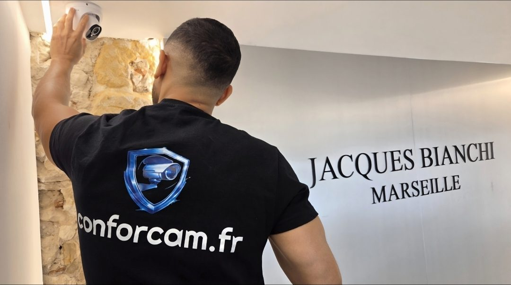

Les points sensibles d’un entrepôt
Les accès
Portail, portes sectionnelles, quais de chargement, porte du personnel.
Le périmètre
Clôture, cour, parking des véhicules : pour détecter une approche avant l’intrusion.
Le stockage
Allées, zones de préparation, marchandises de valeur, local d’outillage.
Un matériel choisi pour les grandes distances
- Caméras filaires PoE : un seul câble réseau pour l’alimentation et l’image, stable sur de grandes longueurs.
- Vision nocturne adaptée aux cours et aux parkings peu éclairés.
- Détection de personnes et de véhicules, selon les modèles, pour limiter les fausses alertes.
- Enregistreur et disque dur dimensionnés selon le nombre de caméras et la durée de conservation souhaitée.
- Caméras solaires pour un portail ou une zone sans alimentation : voir notre page caméra solaire sans fil.
Une alarme complète le dispositif : détecteurs d’ouverture et de mouvement, sirène, alerte sur le téléphone du responsable.

Les règles pour un local professionnel
Un entrepôt qui ne reçoit pas de public n’est pas soumis à l’autorisation préfectorale. En revanche, les salariés doivent être informés de la présence des caméras, et celles-ci ne doivent pas servir à surveiller en permanence leur travail ni filmer les espaces de pause. Si une partie du site reçoit du public, par exemple un comptoir de vente, cette zone relève de l’autorisation préfectorale.
Marseille et les zones d’activités voisines
Nous intervenons dans tous les arrondissements de Marseille, notamment dans les secteurs d’activité du nord et de l’est de la ville, ainsi qu’à Vitrolles, Marignane, Aubagne et Aix-en-Provence.
Questions fréquentes
Faut-il une autorisation pour filmer un entrepôt ?
Si le site ne reçoit pas de public, l’autorisation préfectorale n’est pas requise. Les salariés doivent cependant être informés, et les caméras ne doivent pas servir à les surveiller en permanence.
Combien de caméras faut-il pour un entrepôt ?
Cela dépend de la surface, du nombre d’accès et de la hauteur sous plafond. Nous le déterminons pendant l’étude sur place, gratuite.
Peut-on surveiller une cour ou un portail éloigné ?
Oui, avec une caméra filaire lorsque le câble peut être passé, ou avec une caméra solaire autonome dans le cas contraire.
Y a-t-il un abonnement ?
Non. Le matériel appartient à votre entreprise et ConforCam n’impose aucune mensualité.
Un entrepôt ou un local à protéger ?
Nous étudions le site gratuitement et vous remettons un devis détaillé, au tarif fixé avant l’intervention.
Être rappelé gratuitement07 70 47 02 18